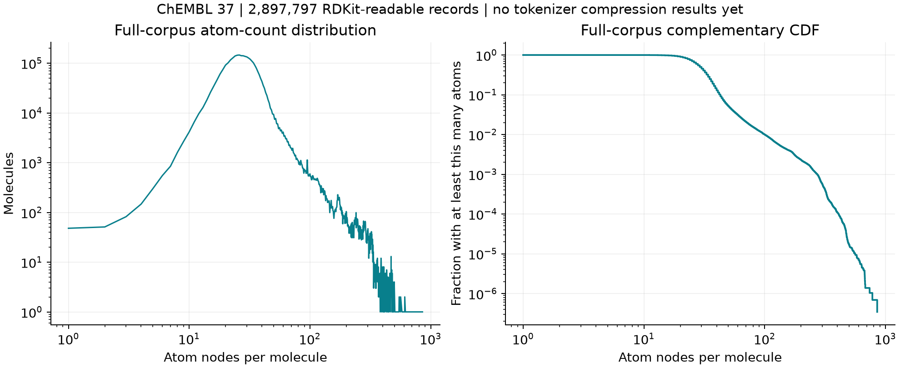
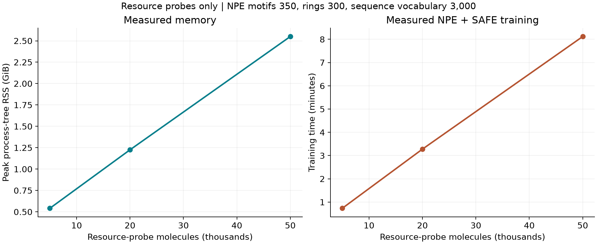
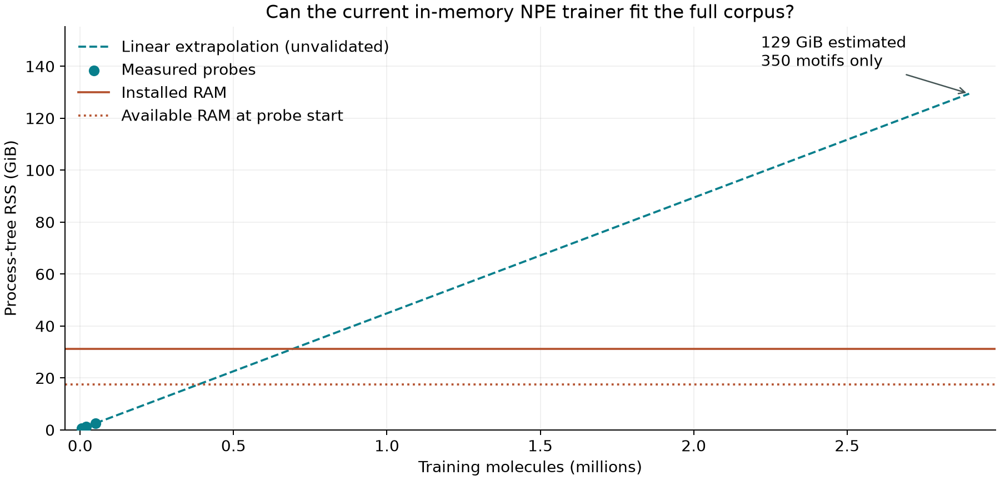

Run status at the published snapshot: running; stage: npe_safe. Corpus and resource figures below are measured; full tokenizer-comparison figures will only appear after training and the full audit finish. Timestamped run snapshot (not a live monitor).
*Not the new SQLite trainer
Disk-backed NPE: implemented and validated
Graph states, candidate frequencies and the inverted index now live in SQLite. Each batch is committed atomically; interrupted initialization or either phase of a merge can resume. Global frequency selection and tie-breaking retain the in-memory implementation's ordering.
On the same 5,000 ChEMBL records, with 3,000 NPE motifs and 300 rings, the complete model fingerprint matches the original implementation: verified identical. This probe took 49.8 seconds and peaked at 0.65 GiB. SAFE conversion also uses workers with a frozen copy of the learned NPE engine, so its time is not directly comparable to the earlier serial-conversion probes.
What has actually been run?
The original ChEMBL 37 SMILES file has been verified against its SHA-256 manifest. The following models were trained on nested uniform random subsets selected from the entire source, seed 20261009. Each run uses 4 workers, 300 ring types, a 3,000-token SAFE vocabulary target, and the requested NPE motif budget. BRICS uses fixed rules and has no motif-training budget.
| Pipeline | Probe records | NPE motifs | Training seconds | Peak RSS / GiB |
|---|---|---|---|---|
| NPE + SAFE | 5,000 | 350 | 44.1 | 0.54 |
| NPE + SAFE | 20,000 | 350 | 196.7 | 1.23 |
| NPE + SAFE | 50,000 | 350 | 487.2 | 2.55 |
| NPE + SAFE | 5,000 | 3000 | 75.0 | 0.54 |
| BRICS + SAFE | 20,000 | Fixed rules | 10.6 | 0.63 |
Single-run wall times; end-to-end training includes SAFE conversion and sequence BPE. Sampling, imports, model saving, and smoke checks are excluded from training seconds. Peak RSS includes the training process and descendants. It is sampled every 0.5 seconds and can double-count shared pages. The first 100 training rows are used only as a smoke check, never as held-out accuracy evidence.
Full-corpus chemistry census
Every one of the 2,897,819 input records was visited. RDKit parsed 2,897,797; 22 failed parsing. No tokenizer model is required for this census. Explicit atom nodes are counted; implicit hydrogens are excluded. Records are not deduplicated.
Observed molecule sizes: mean 31.23 atom nodes, median 29, 95th percentile 50, 99th percentile 99, maximum 855. There are 28,130 molecules with more than 100 atoms. This long tail motivates reporting both typical lengths and tail behavior.

| Overlapping molecular subset | Records |
|---|---|
| stereo | 1,093,588 |
| charge | 174,279 |
| disconnected | 120,710 |
| isotope | 3,255 |
Subsets overlap. “Stereo” means specified atom chirality or bond stereochemistry; “charge” means at least one formally charged atom, including net-neutral zwitterions.
37.74% of readable molecules contain specified stereochemistry. Fidelity on these molecules is therefore a substantial part of the evaluation, rather than just a few edge cases. These input statistics do not establish a compression advantage for either tokenizer.
Download the complete census aggregatesFull training: resource feasibility


The original in-memory implementation exceeds this machine's available RAM at the extrapolated scale. The disk-backed replacement avoids retaining the complete graph corpus in Python memory and has separate measurements above when available. A smaller motif vocabulary or subset would change the requested experiment and is not silently substituted.
Linear time scenarios for the original implementation are provided in the forecast JSON. They are planning estimates, not completion promises or estimates for the SQLite replacement. A GPU does not directly accelerate the current Python/RDKit tokenizer implementation.
Analysis design after full training
| Question | Measurements | Reference / boundary |
|---|---|---|
| How much shorter? | Atom nodes, graph motifs, SAFE sequence lengths; mean, median, maximum and CCDF. | DemoDiff Fig. 3(b), 9. Graph nodes and string tokens are distinct units. |
| Does a larger vocabulary help? | Vocabulary-budget sweep and sequence/graph length curves. | DemoDiff Fig. 8. Each budget requires a specified training configuration. |
| Which molecules compress? | Per-molecule atom-to-unit ratio and atom-count versus unit-count density. | DemoDiff Fig. 10–11. Not a byte compression claim. |
| What is the connection cost? | Edge records, SAFE block counts, compact JSON payload bytes. | SAFE stores connectivity in its string; no claim of zero connection cost. |
| Is the molecule preserved? | Canonical isomeric-SMILES identity; all errors and mismatches; isotope, charge, stereo subsets. | Failures remain in the denominator. Common-success subsets support paired length comparisons. |
| What is learned? | Vocabulary usage, rank-frequency, entropy and token examples. | A SAFE BPE token need not be an independently valid molecular fragment. |
With all ChEMBL records used for training, evaluation on the same database is an in-corpus descriptive analysis, not a held-out generalization experiment. Neural generation quality and downstream task performance are outside this tokenizer-only experiment.
Reproduce the resource assessment
Python 3.11, Git, and the separately downloaded ChEMBL corpus are required.
Commands below use a POSIX shell; on the existing Windows environment use .\.venv\Scripts\python.exe instead of python.
python -m pip install -e ".[test,analysis]" python examples/profile_full_training.py \ --input ../chembl_37_smiles.smi --metadata ../dataset_metadata.json \ --output training_runs/resource_probe --workers 4 # Census visits every source record; no tokenizer model is required. python examples/analyze_corpus.py \ --input ../chembl_37_smiles.smi --metadata ../dataset_metadata.json \ --output analysis_runs/census --workers 4
Full-training and analysis commands, resource assumptions, and publication instructions are in RESEARCH.md.
Resource table (CSV) · Measured runs (JSON) · Forecast assumptions (JSON) · Dataset provenance (JSON) · Resource figure (SVG)

Sources and attribution
Liu et al., Graph Diffusion Transformers are In-Context Molecular Designers, Section 3.1 and Appendix B.2, arXiv v1 (2025). The requested OpenReview PDF was access-gated during review; the accessible author preprint was used. This is an adapted analysis plan, not a reproduction of their reported dataset or results.
ChEMBL 37 chemical representations: official EBI release, CC BY-SA 3.0. Source records are preserved, including duplicates. No raw SMILES corpus or trained model is embedded in this page. All figures on this page were generated from the measured local data.